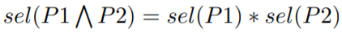

[CMU15445]:查询优化1
Overview
查询优化是数据库中最难的部分，由于SQL是声明式语言，用户只需要给出SQL语句，DBMS负责给出最优的查询方案
这里有两种查询优化的策略: 启发式方法(heuristic)/静态规则、基于代价的优化
启发式方法
在教科书上给出了两个启发式方法的例子
- 尽早执行选择
- 尽早执行投影
当然还有更多的启发式方法，当使用该策略时，不需要取检查真正的数据，通常只需要获取一些元数据即可
基于代价的优化
通过使用等价规则来穷举出所有或者部分查询计划，从中筛选出效率最高的查询方法，但该策略需要访问真实数据，比较耗时
下面是一个查询
SQL Rewriter
该步骤是一个可选步骤，在该步骤当中，可以通过某些转换规则让我们以某种方式对SQL进行重写，通常是一些标记
SQL Parser
该步骤负责将SQL字符串解析成SQL语法树
BInder
该步骤负责将查询对象转换为一些内部标识符，如将一个表名转换为磁盘的物理地址等，该步骤会利用系统的catalog
Tree Rewriter
该步骤会对语法树进行重写，使用的是静态规则，不会去使用实际数据，使用系统的catalog
Optimizer
该步骤会使用成本模型，需要真正访问数据，计算出最优的查询计划
最终，会得到一个实际的物理查询计划，数据库使用此查询计划进行查询
Logical Plan Vs. Physical Plan
逻辑计划是从高层次上来说的，如一个查询计划的树，逻辑计划规定了各个运算之间是以怎样的关系被组织的
物理计划则是具体化的逻辑计划，如一个join是使用hash join还是sort-merge join, 该计划也是最终会执行的计划
Relational Algebra Equivalence
如果两个关系代表达式在每个合法的数据库实例上都会产生相同的tuple集合，那么就称它们为等价的
这种将关系代数使用等价规则进行转换的技术也被称为查询重写，在上图中的tree rewriter步骤中就使用了该技术
实际上，有一套通用的等价规则，这些规则建立在数学基础之上，下面是教材中给出的一些规则
Logical Query Optimization
选择操作的优化
尽早开始过滤(谓词下移)
重新排序谓词，以便DBMS首先应用最具选择性的谓词
将复杂谓词分解并将其下移
投影操作的优化
尽早开始投影以便减少操作间传递的中间结果的规模
移除所有非必要的属性，只投影我们需要的
谓词的优化
移除一些根本无意义的谓词
Cost-based Query Optimization
DBMS优化器会使用内部的成本模型来评估一个特定查询计划的执行成本，这使得它们不用真实的去执行查询来获取这个查询的执行成本
各个数据库内部的成本模型不一样，但是总的来说是基于以下几点来考虑的
- CPU
- DISK
- Memory
- Network
在数据库的内部，会维护一些统计数据，不同的系统会在不同时刻更新这些数据，如每当表中的数据有20%发生改变时触发更新操作，或者是每天定时触发更新操作
Statistics
接下来使用数学关系分析成本，首先定义一些变量
N
R: 关系R所拥有的的tuple数量V(A, R): 表R在A属性上中非重复值的数量
**选择基数SC(A, R)**：关系R中的A属性上平均每个非重复值对应的元组数量, 即N
R/ V(A, R)使用该基数即意味着假设所有非重复值都是均匀分布的，那么必然就会产生不准确的结果
Complex Predicates
一个谓词的选择率的值为在表中满足该谓词的元组所占整个表的元组的百分比
这个百分比的计算依赖于谓词的类型
等值
范围
取反
合取

析取
实际上，上面这些数学公式全部是基于一些基本的假设得到的，尽管这些假设可能与现实差距很大
- 假设1： 数据均匀分布
- 假设2： 谓词之间是独立的
- 假设3：当对两个表进行join时，一张表中每一个tuple在其它表中都有另一个tuple与之对应
Statistics Storage
直方图
如果想要获取精确的数据，那么一种方法就是为表中的每一列维护一个哈希表，建立值–>出现次数的映射，这样做被称为heavy-hitter
但这样做的弊端也十分明显，就是空间消耗太大，因为需要为表中的每一列都维护一个哈希表，在现实中是不可取的
不过，可以对上面这种做法稍微做一点改进，将几个值合并在一个形成一个bucket
如当查询2的时候，就会找到bucket1 , 然后将12 / 5 = 2.4, 得到一个估计值，这样做当然也是不准确的，但是空间消耗会减少很多
另一种改进方案是每个bucket的值的数目不固定，但是保持每个bucket的数值个数总和大致相等，这样做会取到更为精确的结果
样本
现代的DBMS也使用抽样的方法来计算每个谓词的选择率，所谓抽样即从整个表中取出部分数据作为样品表，然后计算这个样品表中谓词的选择率
高端的数据库会同时采用这两种方式
Search Algorithm
对于不同类型的查询计划，有着不同的优化方法
单个关系
对于访问单个关系的查询计划来说，我们只需要选择最优的访问方法即可
- 循序扫描
- 二分搜索(基于聚簇索引)
- 索引扫描
通常情况下使用简单的启发性方法就可以了，而对于OLTP来说，经常就是单表查询，因此优化比较简单
有些查询计划在查询的时候总是有索引能够选择，它只需要选择一个最优的索引即可，这类查询被称作sargable(Search Argument able), OLTP的连接也几乎总是在基数很小的外键关系上
多关系
当多关系发生join运算时，可以有很多种join的顺序，当有n个表进行join的时候，进行join的顺序是一个卡特兰数，大约是4^n, 很显然不可能对它们进行穷举
在IBM的
system R当中，会将多表连接全部转换为左深连接树(join运算交换律)这样做可以达到流水线的效果，每一个join运算的输出都直接作为下一个join运算的输入
查询优化的通用步骤
- 穷举出所有的操作顺序
- 穷举出每个运算所使用的操作(Hash join, sort-merge join, nested loop join)
- 穷举出对每张表所使用的穷举方法(index scan, squential scan)
IBM使用了一种dynamic programming方法，思想有点像动态规划，先求出局部的最小值，在求出全局的最小值
先列出所有join的顺序，然后给出所有可能的join操作
选出到达各个不同状态的最短的路径
重复上面的步骤一直到最终目标
最终，从全部找到最短的路径
在Postgres的查询优化器中，他们使用了两种方法，当表的规模比较小的时候，他们会使用和System R一样的方案，当表的规模比较大的时候，他们就会使用基因遗传算法
首先随机选出几个优种的组合，这种组合在顺序，操作算法，访问表的方面上面都是随机的，然后排除掉最差的，选择最优，并将其特征与其他的个体融合形成新个体，在经过多代筛选之后，选择出最优的
其中，每个个体的消耗也是根据直方图或者抽样给出来的
本博客所有文章除特别声明外，均采用 CC BY-SA 4.0 协议 ，转载请注明出处！